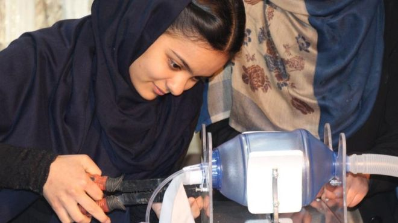

Facebook corrige falha que poderia roubar contas com link e paga US$ 20 mil a pesquisador que identificou o erro
Problema estava na integração da rede social que permite fazer login a partir de outros sites.
Sites e aplicativos podem ser integrados com o Facebook para dispensar cadastros,
mas recurso não deve permitir acesso à conta do usuário.
Astrônomos rastreiam origem de neutrinos encontrados na Antártica
O experimento Antena Impulsiva Transiente da Antártica (Anita), da Nasa, é um detector de ondas de rádio suspenso por um balão.
Recentemente, o projeto foi o responsável por encontrar estranhos sinais no continente gelado que pareciam ser desencadeados por neutrinos de energia extremamente alta.
Videoconferência do WhatsApp já está disponível na versão beta
Com a pandemia de Covid-19, aplicativos de videoconferência estão vendo um surto de popularidade inédito.
O Facebook percebeu isso e começou a se mexer. A empresa anunciou o Messenger Rooms, com suporte para até 50 pessoas, e já está em processo de integrá-lo ao WhatsApp.
Supercomputadores da Europa são alvos de hackers.
Vários supercomputadores da Europa foram infectados com o malware Monero, que faz mineração de criptomoedas e tiveram que ser desligados.
De acordo com o site ZDNet, incidentes de segurança foram relatados no Reino Unido, Alemanha e Suíça, enquanto há rumores de que uma invasão semelhante também aconteceu na Espanha.

Esse é o smartphone que mudará a história da fotografia.
Conheça o Galaxy S20, o S20+ e o S20 Ultra. Eles contam com o revolucionário 8K Video Snap,
que muda a forma como você grava vídeos e tira fotos.
1 Com a segurança do Samsung Knox, uma bateria inteligente,
um processador poderoso e um espaço de armazenamento enorme,
os 3 modelos do Galaxy S20 revelam um novo mundo para os smartphones.
A Ubisoft está processando a Apple e o Google por um jogo para celular chinês, Rainbow Six: Siege.
A área F2 é "projetada para replicar de perto ... praticamente todos os aspectos" do jogo, alega, em um documento de 43 páginas, completo com capturas de tela.
Também está processando o desenvolvedor, Ejoy, de propriedade da gigante chinesa de tecnologia Alibaba.
Personagens, modos de jogo, mapas de jogos, animações e até a interface do usuário foram copiados, alega o documento.
Instagram lança nova ferramenta para agregar conteúdo; Brasil é um dos primeiros a receber.
'Guias' é nova seção do app e permite incluir publicações sobre um mesmo assunto, mesmo que sejam de outras pessoas.
Por enquanto função está disponível apenas para instituições específicas.
Microsoft admite que estava errada quanto ao Software Livre
Na última quinta-feira (14) aconteceu algo que quem acompanha o mercado de tecnologia há mais tempo certamente acreditava que nunca iria acontecer:
a Microsoft admitiu que “estava errada” sobre o Software Livre e Open Source.
Estudo encontra sete tipos de coronavírus em morcegos na África.
Pesquisadores encontraram sete novos tipos de coronavírus em morcegos no Gabão, país africano que tem a caça como meio de subsistência para muitas comunidades.
Embora tais vírus não sejam comprovadamente possíveis causadores de uma pandemia, é preciso ter em mente que a Covid-19 se originou em morcegos.
Hackers atacaram supercomputadores para minerar criptomoedas, apontam relatos.
Especialistas em segurança e cientistas estão identificando e estudando ataques realizados contra supercomputadores na Europa.
Os incidentes têm deixado os equipamentos temporariamente indisponíveis, exigindo manutenção para restabelecer os sistemas de acesso às máquinas.
Empresa que compra brechas de software diz que vai parar de aceitar falhas no iPhone por 'oferta elevada'.
Zerodium, uma empresa que atua no mercado paralelo de falhas de segurança, anunciou que não pretende comprar certos tipos de vulnerabilidades para iOS "nos próximos dois ou três meses".
A empresa justificou que tem recebido um "número elevado" de ofertas de brechas no sistema da Apple, que é usado no iPhone e no iPad.
Exportações de eletroeletrônicos registraram pior abril dos últimos 20 anos.
As exportações de produtos eletroeletrônicos despencaram em abril, conforme dados compilados pela associação do setor, a Abinee. No mês, foram vendidos ao exterior US$ 306,1 milhões em produtos.
Apenas o resultado de abril de 2000 foi pior, quando registrou US$ 305,8 milhões.
As vendas externas caíram 39,2% em abril deste ano, comparado ao mesmo mês do ano passado.
O desempenho já reflete a retração da atividade econômica no país e no mundo em função da pandemia de Covid-19.
Microsoft adaptará plataforma de computação em nuvem para setor de saúde.
A Microsoft disse que reunirá todas as suas tecnologias em um pacote chamado "Microsoft Cloud for Healthcare".
O sistema permitirá que os hospitais armazenem dados captados durante interações com pacientes.
Hacker tenta vender dados de 773 milhões de pessoas e acaba preso.
Nesta terça-feira (19), o Serviço de Segurança da Ucrânia (SSU) anunciou a prisão do hacker Sanix, que ficou conhecido no ano passado por tentar vender um banco de dados com 773 milhões de contas de email e 21 milhões de senhas pessoais.
Segundo as autoridades, essa era apenas uma pequena fração do que o hacker tinha roubado.
Novo Windows 10: todos os recursos que a Microsoft acabou de anunciar
Durante a Build 2020, conferência da Microsoft destinada a desenvolvedores,
a companhia revelou importes recursos que serão implementados ao Windows 10 e que deverão ser extremamente úteis tanto para usuários como para profissionais desenvolvedores de softwares.
Windows 10 vai rodar programas Linux com interface gráfica
A história conturbada entre a Microsoft e o Linux parece estar chegando ao fim.
A empresa fundada por Bill Gates anunciou, durante a BUILD 2020, que o Subsistema Windows para Linux (WSL), módulo que permite a desenvolvedores um ambiente de criação no sistema operacional da companhia, rodará interfaces de programas voltados ao SO do pinguim.
iPhone que ficou 8 meses imerso em rio é devolvido funcionando
Um chinês de sobrenome Zhou derrubou um iPhone no rio Wu, em Guiyang, província de Guizhou. Cerca de 8 meses depois,
ele recebeu um telefonema de alguém querendo devolver o aparelho em funcionamento ao dono.
Conflito entre China e EUA pode paralisar mercado de celulares.
A tensão comercial entre a China e os Estados Unidos pode subir de nível com as novas restrições da China sobre a Apple, Qualcomm e outras companhias norte-americanas. Segundo o Business Insider,
se a cadeia produtiva de celulares continuar com a segmentação, lançamentos internacionais podem ser fortemente impactados ou mesmo paralisados.
Programa oferece 10 mil bolsas gratuitas em TI para mulheres.
São Paulo – A fim de ajudar a aumentar a presença das mulheres no ramo da tecnologia no Brasil, a plataforma Impulso Network se uniu ao centro educacional Digital Innovation One para distribuir bolsas de estudo gratuitas para cursos online.
Estudo mostra principais habilidades de bons programadores.
São Paulo – Quem estuda ou apenas admira a distância a profissão dos programadores de software pode pensar que a habilidade com matemática é o mais importante para bons profissionais desse mercado.
No entanto, um novo estudo publicado na revista científica Scientific Reports, da Nature, mostra que uma das habilidades mais importantes é a de aprender novas línguas.
Morre cientista da computação que inventou o “Ctrl C, Ctrl V”.
Morreu nesta segunda-feira, 17, o cientista da computação americano Larry Tesler, responsável pela criação dos comandos “copiar” e “colar”, além do atalho “recortar”.
Tesler tinha 74 anos e causa da morte não foi revelada. A famosa criação do cientista vem de um processador de texto chamado Gypsy, que tornou conhecidos os recursos presentes em basicamente todos os dispositivos de texto digitais do mundo.
Google oferece 2 mil bolsas para curso online de Suporte em TI.
São Paulo – Para ajudar os profissionais brasileiros a adquirirem as habilidades digitais em alta no mercado de trabalho, o Google oferece junto com o Coursera um Certificado Profissional para Suporte de TI.
Apple e Google lançam 'momento decisivo' para aplicativos de rastreamento de contatos.
A Apple e o Google lançaram uma ferramenta de software que possibilitará aos países o lançamento de aplicativos de rastreamento de coronavírus que adotem o modelo centrado na privacidade das empresas.

Meninas afegãs fabricam ventiladores com peças de automóveis.
A equipe de robótica feminina do Afeganistão voltou seu foco para pacientes com coronavírus - produzindo ventiladores acessíveis com peças de automóveis.
falhas de segurança encontradas no aplicativo de rastreamento de contatos do NHS
Falhas de segurança abrangentes foram sinalizadas no aplicativo de rastreamento de contatos Covid-19 sendo pilotado na Ilha de Wight.
 Covid-19: cientistas não têm verba para lançar app que avalia saúde mental.
Covid-19: cientistas não têm verba para lançar app que avalia saúde mental.